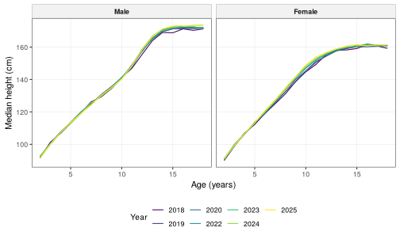
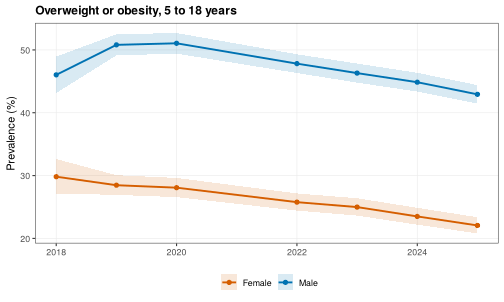
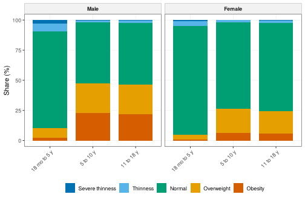
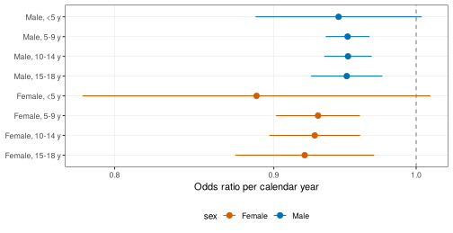
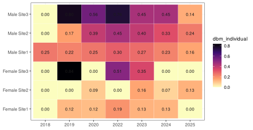
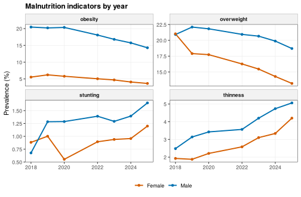

Secular trends, prevalence and the double burden of malnutrition
Source:vignettes/trends-malnutrition.Rmd
trends-malnutrition.RmdAbout this vignette. All data are simulated with
wgh_simulate(). The results show how the methods work and resemble the published patterns, but they are not the published findings and are not research results. The flows and functions run in development mode (wgh_config("dev")), with 100 bootstrap replicates where stated in the code.
This vignette reproduces the descriptive and trend analyses of two studies:
- secular trends in height, weight and BMI, nutritional status prevalence and regional differences (Ho et al. 2026) [1], and
- stunting, thinness, overweight, obesity and the double burden of malnutrition (Ho et al. 2026) [2].
It first builds each table and figure step by step with the module functions, explaining the options and the output, and then shows the two flows that produce everything in one call. The vignette is precomputed because it uses a full-size simulated cohort.
Data
wgh_simulate() builds a cohort that resembles the school
health cohort of the studies. With 30,000 children and the default seed
it gives the same teaching cohort as the books.
library(WeGrowHealthR)
wgh_config("dev") # fast settings, see ?wgh_config
#> WeGrowHealthR run mode: dev
sim <- wgh_simulate(30000, seed = 2026)
v <- sim$visits
dim(v)
#> [1] 63343 13
head(v, 3)
#> # A tibble: 3 x 13
#> pid sex site dob yearvisit examdate age height weight bmi haz waz baz
#> <chr> <fct> <fct> <date> <int> <date> <dbl> <dbl> <dbl> <dbl> <dbl> <dbl> <dbl>
#> 1 C000001 Fema~ Site2 2002-06-09 2018 2018-09-18 16.3 161. 42.4 16.3 -0.227 NA -1.94
#> 2 C000002 Fema~ Site3 2006-02-26 2023 2023-12-19 17.8 162. 56.1 21.3 -0.094 NA 0.016
#> 3 C000003 Male Site1 2012-05-11 2019 2020-01-05 7.65 125. 27.7 17.8 -0.122 0.837 1.27v has one row per visit with WHO z-scores already
computed. Each child is measured at school once per year, so a child
contributes several visits.
1. Describing the cohort (Table 1)
wgh_table1() summarises variables by group. Numeric
variables are shown as median (IQR) by default
(numeric_summary = "mean" gives mean (SD)), and categorical
variables as n (%). per_child = TRUE uses each child’s
first visit, which is what a cohort description needs, and a test of
difference between groups is added.
cl <- wgh_classify(v)
cl$age_group <- wgh_age_bands(cl$age, breaks = c(0, 5, 11, 19),
labels = c("18 mo to 5 y", "5 to 10 y", "11 to 18 y"))
t1 <- wgh_table1(cl, vars = c("age", "haz", "baz", "site", "age_group"), by = "sex", per_child = TRUE)
t1
#> # A tibble: 10 x 6
#> variable level Overall Male Female p_value
#> <chr> <chr> <chr> <chr> <chr> <dbl>
#> 1 N "" 24,182 12,626 11,556 NA
#> 2 age "Median (IQR)" 7.1 (3.2, 12.9) 6.9 (3.1, 12.7) 7.4 (3.3, 13.1) 1.08e- 3
#> 3 haz "Median (IQR)" 0.1 (-0.5, 0.7) 0.1 (-0.6, 0.7) 0.1 (-0.5, 0.7) 8.58e- 7
#> 4 baz "Median (IQR)" 0.4 (-0.5, 1.3) 0.7 (-0.4, 1.7) 0.2 (-0.6, 1.0) 3.95e-114
#> 5 site "Site1" 14,817 (61.3) 7,724 (61.2) 7,093 (61.4) 4.32e- 1
#> 6 site "Site2" 6,632 (27.4) 3,499 (27.7) 3,133 (27.1) NA
#> 7 site "Site3" 2,733 (11.3) 1,403 (11.1) 1,330 (11.5) NA
#> 8 age_group "18 mo to 5 y" 8,938 (37.0) 4,794 (38.0) 4,144 (35.9) 2.82e- 3
#> 9 age_group "5 to 10 y" 7,646 (31.6) 3,943 (31.2) 3,703 (32.0) NA
#> 10 age_group "11 to 18 y" 7,598 (31.4) 3,889 (30.8) 3,709 (32.1) NANext step. Export tables with
wgh_flextable() (for Word) or
wgh_export_xlsx() (for Excel).
2. Height, weight and BMI by age and calendar year
The first study compared median measurements by single year of age
across calendar years. wgh_median_ci() gives medians with
distribution-free confidence intervals, and
wgh_trend_test(type = "mood_median") tests whether the
medians differ across years within each sex and age.
cl$age_year <- floor(cl$age)
meds <- wgh_median_ci(cl[cl$age >= 2, ], "height", by = c("sex", "age_year", "yearvisit"))
head(meds)
#> # A tibble: 6 x 7
#> sex age_year yearvisit n median lower upper
#> <chr> <dbl> <int> <int> <dbl> <dbl> <dbl>
#> 1 Male 2 2018 57 91.5 90 93.4
#> 2 Female 2 2018 60 90 88.1 91.3
#> 3 Male 3 2018 49 101. 99.5 102.
#> 4 Female 3 2018 45 98.7 97.1 100.
#> 5 Male 4 2018 57 107. 105 110.
#> 6 Female 4 2018 51 107 105. 108.
mt <- wgh_trend_test(cl[cl$age >= 2, ], "height", "yearvisit", by = c("sex", "age_year"), type = "mood_median")
head(mt)
#> # A tibble: 6 x 8
#> sex age_year test statistic df p_value first last
#> <chr> <dbl> <chr> <dbl> <int> <dbl> <dbl> <dbl>
#> 1 Male 2 Mood median 14.1 6 0.0288 91.5 91.5
#> 2 Female 2 Mood median 5.57 6 0.473 90 91.1
#> 3 Male 3 Mood median 6.06 6 0.416 101. 100.
#> 4 Female 3 Mood median 8.63 6 0.195 98.7 99.1
#> 5 Male 4 Mood median 4.26 6 0.642 107. 107
#> 6 Female 4 Mood median 3.13 6 0.792 107 107.
mh <- aggregate(height ~ sex + age_year + yearvisit, data = cl[cl$age >= 2, ], FUN = median)
library(ggplot2)
ggplot(mh, aes(age_year, height, colour = factor(yearvisit))) +
geom_line() + facet_wrap(~sex) + scale_colour_viridis_d(name = "Year") +
theme_wgh() + labs(x = "Age (years)", y = "Median height (cm)")
The curves for different years lie almost on top of each other at young ages and separate slightly in adolescence, the pattern of a slow secular increase in height.
First against last year, and site differences
wgh_median_diff() estimates the difference in medians
between groups with a bootstrap that resamples children, not visits, so
repeated visits of the same child are handled correctly.
ref sets the reference group and B the number
of replicates (from the run mode when not given).
yrs <- range(cl$yearvisit)
fl <- cl[cl$yearvisit %in% yrs & cl$age >= 2, ]
fl$year_f <- factor(fl$yearvisit)
md <- wgh_median_diff(fl, "height", "year_f", by = c("sex", "age_year"), B = 100)
head(md)
#> # A tibble: 6 x 9
#> sex age_year level reference median median_ref difference lower upper
#> <chr> <dbl> <chr> <chr> <dbl> <dbl> <dbl> <dbl> <dbl>
#> 1 Male 2 2025 2018 91.5 91.5 0 -1.55 1.20
#> 2 Female 2 2025 2018 91.1 90 1.10 -0.405 2.70
#> 3 Male 3 2025 2018 100. 101. -1.15 -1.98 0
#> 4 Female 3 2025 2018 99.1 98.7 0.400 -1.33 2.10
#> 5 Male 4 2025 2018 107 107. 0.400 -1.91 2.10
#> 6 Female 4 2025 2018 107. 107 -0.400 -1.75 0.826Each row is one sex and age, with the median difference (last minus
first year) and its bootstrap interval. The same function with
group = "site" gives the regional differences of the first
study.
Calendar trends with GEE
Prevalence and medians by year ignore that the same children are
measured again. wgh_gee_trend() fits generalised estimating
equations with an exchangeable working correlation within children,
giving the change per calendar year within age groups. For a continuous
outcome it is a linear GEE (cm per year), and for a TRUE/FALSE indicator
a logistic GEE (odds ratio per year).
gee_h <- wgh_gee_trend(cl[cl$age >= 5, ], "height", age_group = "age_group", by = "sex")
gee_h$slopes
#> # A tibble: 4 x 8
#> sex term estimate se lower upper p_value age_group
#> <chr> <chr> <dbl> <dbl> <dbl> <dbl> <dbl> <chr>
#> 1 Male age_group5 to 10 y:.yr 0.382 0.0556 0.273 0.491 6.33e-12 5 to 10 y
#> 2 Male age_group11 to 18 y:.yr 0.324 0.0582 0.210 0.438 2.56e- 8 11 to 18 y
#> 3 Female age_group5 to 10 y:.yr 0.801 0.0693 0.665 0.937 0 5 to 10 y
#> 4 Female age_group11 to 18 y:.yr 0.103 0.0310 0.0425 0.164 8.62e- 4 11 to 18 yestimate is the change in mean height per calendar year
at the same age, in cm, with its 95% interval. Values of a few
millimetres per year describe a slow secular increase in height.
3. Nutritional status prevalence
wgh_prevalence() with a status variable gives the share
of each category. method = "sison_glaz" gives simultaneous
95% intervals for all categories, so the intervals can be compared with
each other. Prevalence from 5 years and below 5 years are reported
separately, because the WHO cut-offs differ.
older <- cl[cl$age >= 5, ]
wgh_prevalence(older, "bmi_status", by = "sex", method = "sison_glaz")
#> # A tibble: 10 x 7
#> sex category n cases prevalence lower upper
#> <chr> <chr> <int> <int> <dbl> <dbl> <dbl>
#> 1 Male Severe thinness 25155 81 0.322 0 0.986
#> 2 Male Thinness 25155 476 1.89 1.23 2.56
#> 3 Male Normal 25155 12775 50.8 50.1 51.4
#> 4 Male Overweight 25155 6209 24.7 24.0 25.3
#> 5 Male Obesity 25155 5614 22.3 21.7 23.0
#> 6 Female Severe thinness 23095 35 0.152 0 0.732
#> 7 Female Thinness 23095 486 2.10 1.52 2.69
#> 8 Female Normal 23095 16681 72.2 71.6 72.8
#> 9 Female Overweight 23095 4481 19.4 18.8 20.0
#> 10 Female Obesity 23095 1412 6.11 5.53 6.69Overweight and obesity by year and by site, with Cochran-Armitage trend tests:
pv_year <- wgh_prevalence(older, "overweight_obesity", by = c("sex", "yearvisit"))
pv_site <- wgh_prevalence(older, "overweight_obesity", by = c("sex", "site"))
pv_site
#> # A tibble: 6 x 7
#> sex site n cases prevalence lower upper
#> <chr> <chr> <int> <int> <dbl> <dbl> <dbl>
#> 1 Male Site1 15345 6952 45.3 44.5 46.1
#> 2 Female Site1 14382 3365 23.4 22.7 24.1
#> 3 Male Site2 6901 3365 48.8 47.6 49.9
#> 4 Female Site2 5997 1618 27.0 25.9 28.1
#> 5 Male Site3 2909 1506 51.8 50.0 53.6
#> 6 Female Site3 2716 910 33.5 31.8 35.3
wgh_trend_test(older, "overweight_obesity", "yearvisit", by = "sex")
#> # A tibble: 2 x 7
#> sex test statistic df p_value first last
#> <chr> <chr> <dbl> <dbl> <dbl> <dbl> <dbl>
#> 1 Male Cochran-Armitage 62.0 1 3.40e-15 46.0 42.9
#> 2 Female Cochran-Armitage 69.3 1 8.25e-17 29.8 22.1
wgh_plot_prevalence(pv_year, title = "Overweight or obesity, 5 to 18 years")
wgh_plot_status_bars(cl, group = "age_group")
Boys have a higher prevalence of overweight and obesity than girls, one of the main findings of the first study, and the simulated cohort reproduces it.
4. Stunting, thinness, overweight and obesity
The second study looked at all forms of malnutrition together. The
same functions are applied to each indicator.
wgh_gee_trend() gives the odds ratio per calendar year
within age groups. Age groups with fewer than min_events
cases are skipped with a warning, because a logistic GEE with very few
events does not converge.
cl$age_group4 <- wgh_age_bands(cl$age, breaks = c(0, 5, 10, 15, 19))
ind <- c("stunting", "thinness", "overweight", "obesity")
pv_all <- do.call(rbind, lapply(ind, function(o)
cbind(indicator = o, wgh_prevalence(cl, o, by = c("sex", "yearvisit")))))
head(pv_all)
#> indicator sex yearvisit n cases prevalence lower upper
#> 1 stunting Male 2018 1329 9 0.6772009 0.3566837 1.282030
#> 2 stunting Female 2018 1246 11 0.8828250 0.4936635 1.573915
#> 3 stunting Male 2019 4363 56 1.2835205 0.9897794 1.662972
#> 4 stunting Female 2019 3993 40 1.0017531 0.7365419 1.361151
#> 5 stunting Male 2020 4583 59 1.2873664 0.9993884 1.656938
#> 6 stunting Female 2020 4161 23 0.5527517 0.3686173 0.828102
gee_ob <- wgh_gee_trend(cl, "obesity", age_group = "age_group4", by = "sex")
gee_ob$slopes
#> # A tibble: 8 x 11
#> sex term estimate se lower upper p_value age_group or_per_year or_lower or_upper
#> <chr> <chr> <dbl> <dbl> <dbl> <dbl> <dbl> <chr> <dbl> <dbl> <dbl>
#> 1 Male age_gro~ -0.0574 0.0314 -0.119 0.00404 6.71e- 2 <5 y 0.944 0.888 1.00
#> 2 Male age_gro~ -0.0507 0.00825 -0.0669 -0.0346 7.88e-10 5-9 y 0.951 0.935 0.966
#> 3 Male age_gro~ -0.0505 0.00896 -0.0680 -0.0329 1.78e- 8 10-14 y 0.951 0.934 0.968
#> 4 Male age_gro~ -0.0514 0.0135 -0.0778 -0.0250 1.37e- 4 15-18 y 0.950 0.925 0.975
#> 5 Female age_gro~ -0.118 0.0657 -0.247 0.0107 7.24e- 2 <5 y 0.889 0.781 1.01
#> 6 Female age_gro~ -0.0726 0.0158 -0.104 -0.0416 4.59e- 6 5-9 y 0.930 0.901 0.959
#> 7 Female age_gro~ -0.0751 0.0171 -0.109 -0.0414 1.20e- 5 10-14 y 0.928 0.897 0.959
#> 8 Female age_gro~ -0.0825 0.0262 -0.134 -0.0311 1.67e- 3 15-18 y 0.921 0.875 0.969An odds ratio below 1 means the odds of obesity fall by that factor each year within the age group.
g <- gee_ob$slopes
g$row <- paste(g$sex, g$age_group, sep = ", ")
wgh_plot_forest(g, "row", "or_per_year", "or_lower", "or_upper", colour = "sex", ref = 1, log = TRUE,
x_label = "Odds ratio per calendar year")
5. The double burden of malnutrition
The double burden can be measured in a child (stunting together with
overweight) or in a population (stunting and overweight both common in
the same group). wgh_dbm() returns both.
dbm <- wgh_dbm(cl, by = c("sex", "site", "yearvisit"))
head(dbm$population)
#> # A tibble: 6 x 9
#> sex site yearvisit n stunting thinness overweight_obesity dbm_individual dbm_population
#> <fct> <fct> <int> <int> <dbl> <dbl> <dbl> <dbl> <lgl>
#> 1 Male Site1 2018 808 0.619 2.72 41.0 0.248 FALSE
#> 2 Male Site1 2019 2667 1.01 3.49 40.9 0.225 FALSE
#> 3 Male Site1 2020 2773 1.26 3.64 40.5 0.252 FALSE
#> 4 Male Site1 2022 3384 1.57 3.58 37.7 0.296 FALSE
#> 5 Male Site1 2023 3310 1.33 4.65 36.1 0.272 FALSE
#> 6 Male Site1 2024 3553 1.41 5.18 34.3 0.225 FALSEdbm_individual is the share of children who are both
stunted and overweight, and dbm_population flags groups
where stunting is at least 10% and overweight at least 20%, the usual
population definition.
dd <- dbm$population
dd$label <- paste(dd$sex, dd$site)
wgh_plot_heatmap(dd, "yearvisit", "label", "dbm_individual", digits = 2)
6. Both studies in one call
The flows run all of the above with the settings of the studies and
return a wgh_report.
trends <- wgh_flow_secular_trends(v, fit_lms = FALSE)
trends
#>
#> -- Secular trends, prevalence and regional differences (Ho et al. 2026, Sci Rep 16:7515) --
#>
#> Tables (12): table1_visits, median_height_by_age_year, median_trend_tests,
#> height_first_vs_last_year, height_site_differences, gee_height_slopes, prevalence_5_18,
#> prevalence_under5, overweight_obesity_by_year, overweight_obesity_by_site, stunting_by_age_group,
#> trend_tests
#> Figures (3): fig_median_height, fig_prevalence_trend, fig_status_bars
#> Models: gee_height
#> Model status: 1 ok, 0 failed, 1 skipped
#> skipped: Cohort LMS height centiles (fit_lms = FALSE)
#> Settings: mode = dev; n_children = 24182; n_visits = 63343
malnutrition <- wgh_flow_malnutrition_trends(v)
malnutrition
#>
#> -- Stunting, thinness, obesity and double burden (Ho et al. 2026, medRxiv 2026.07.26.26358982) --
#>
#> Tables (6): table1, prevalence_by_year, trend_tests, gee_odds_ratios, double_burden, median_by_site
#> Figures (4): fig_trends, fig_status_bars, fig_dbm_heatmap, fig_or_forest
#> Model status: 4 ok, 0 failed, 0 skipped
#> ok: GEE calendar trend, stunting (warning: Skipping age group(s) 5-9 y, 10-14 y with fewer than 10
#> events.)
#> Settings: mode = dev; n_children = 24182The printed report lists its tables and figures and the status of each model. A model that failed or was skipped is shown with the reason, so nothing is silently missing.
plot(malnutrition, "fig_trends", title = "Malnutrition indicators by year")
malnutrition$tables$gee_odds_ratios # any table by name
wgh_export(malnutrition, "malnutrition_results")With fit_lms = TRUE (default) the trends flow also fits
cohort LMS height centiles with gamlss (see
wgh_fit_lms() and plot.wgh_lms()).
Where to go next
-
vignette("trajectories")follows children over time instead of comparing cross-sections. -
vignette("growth-distributions")asks whether BMI is related to height differently in short and tall children.
References
Ho NT, Bangsberg D, Hermiston ML, et al. Overweight and obesity epidemic, temporal trends and regional disparities in physical growth of Vietnamese children. Scientific Reports. 2026;16:7515. https://doi.org/10.1038/s41598-026-37210-w
Ho NT, Hermiston M, Nguyen MA, Nguyen QV, Dao AQ, Tran CTL, Le HTM, Pham TV, Phung LT, Nguyen HT, Nguyen QN, Phung LN, Do CT, Pham AN. Stunting, thinness, obesity, and double burden of malnutrition in Vietnamese urban children. medRxiv. 2026. 2026.07.26.26358982. https://doi.org/10.64898/2026.07.26.26358982